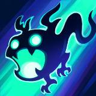

Iris gains Pure Soul charges for every buffed ally and every debuffed enemy.
When she activates her Ultimate, Iris damages the entire enemy team based on the number of charges accumulated.
Base damage: 40% Magic Attack + 12,000
Additional damage per Pure Soul charge: 5% Magic Attack + 600
After dealing damage, Iris executes enemies whose remaining Health falls below the following threshold:
Execution threshold: 40% Magic Attack + 12,000
This makes Soul Burning more than a conventional area attack. It can eliminate multiple weakened opponents after the initial damage is applied.
Strategic advantage: Heroes who maintain buffs and debuffs help Iris create more opportunities to accumulate Pure Soul charges. Tempus is particularly valuable because he contributes both types of effects and extends their duration.

SKILL 2
Otherworldly Creature
Iris releases her familiar, Bitey, who reduces enemy Magic Defense for 5 seconds.
Bitey also extends existing debuffs, as well as debuffs applied during his effect, by another 5 seconds.
The Magic Defense reduction helps compensate for Iris's relatively limited Magic Penetration, improving the conditions for her magical damage.
Extending negative effects also allows Inner Fire to remain active for longer.
Strategic advantage: Nebula's Equilibrium can strengthen the effectiveness of this ability through additional Magic Attack.
Iris is permanently immune to debuffs.
Whenever an enemy applies a debuff or mark to one of her allies, Iris retaliates by reducing that enemy's Physical Attack and Magic Attack for 7 seconds.
This means opponents attempting to weaken Iris's team can end up weakening themselves.
The enemy's original debuff and Iris's retaliation are separate effects, potentially creating additional opportunities for her debuff-related mechanics.
Strategic advantage: Iris can benefit from negative effects even when the opposing team initiates them. Her retaliation also helps reduce enemy offensive pressure.
Whenever a debuff is applied to an enemy, Iris applies an Inner Fire charge that deals damage over time while that debuff remains active.
Up to 5 charges can accumulate on the same target.
If the debuff originates from a hero belonging to the Way of Eternity, that charge deals double damage.
Repeated debuff applications and duration extensions can create significant continuous damage before Iris even activates her Ultimate.
Strategic advantage: Inner Fire weakens opponents throughout the battle, while Soul Burning provides the finishing blow.